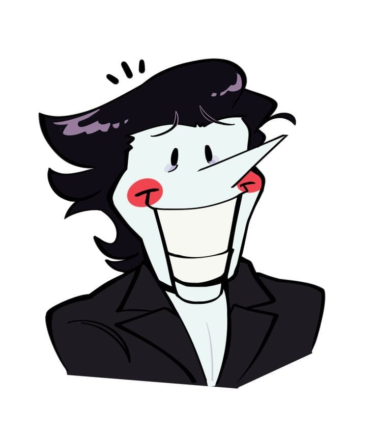
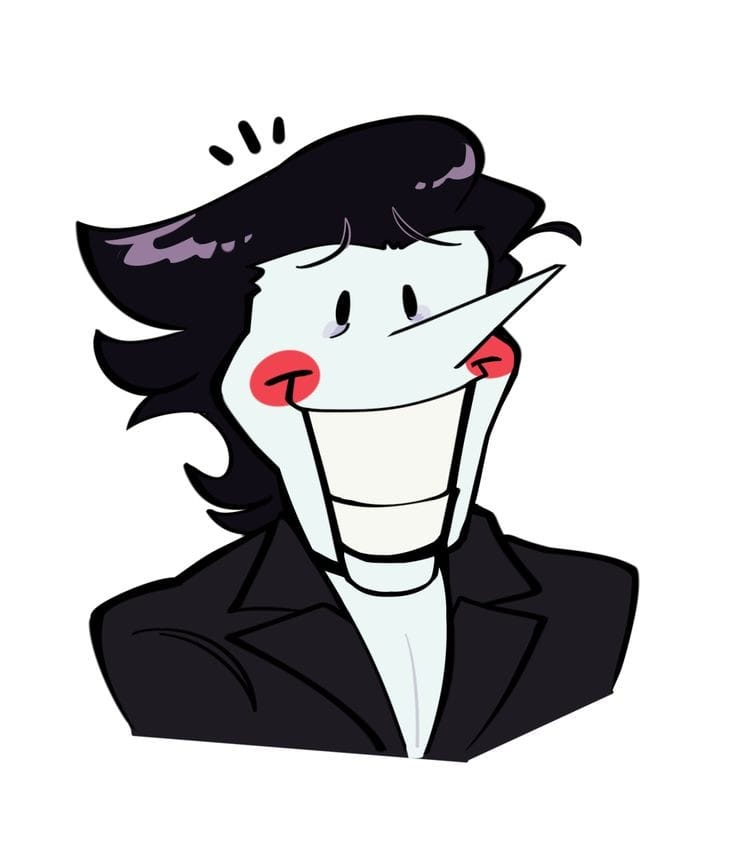
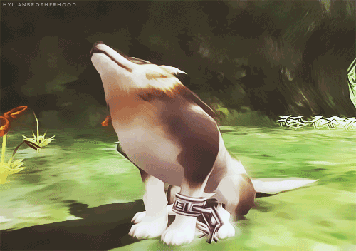
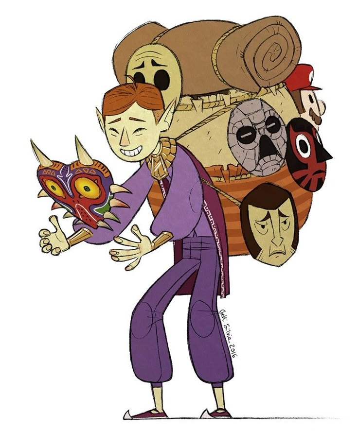
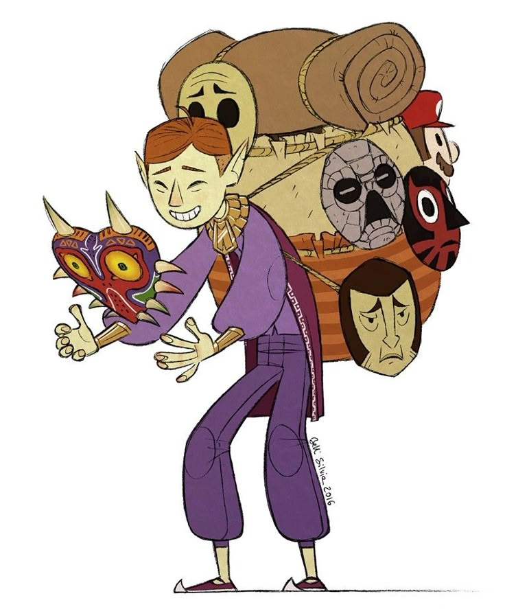

Este apartado podría ser la parte en la que digo
¿Para qué Existe?
Podría decir que no hay un motivo concreto, que no todo lo que hacemos necesita tener un significado, pero estaría mintiendo.
Existe porque tú eres el motivo ya que quise expresar lo que siento simplemente para hacertelo saber.
Admiro tu forma de ser, como enfrentas los momentos dificiles aunque no te conozca por completo pero no por ese simple hecho
me reservare mis comentarios y la manera en la que te veo, aunque te agobies, enojes, rias o llores, eres tú y para mi es
es increbile la manera el la que te puedes llegar a expresar, quizas no sea el mejor momento tambien puede que desconozcamos lo que vendra pero
aveces existir con lo que sentimos ya es motivo suficiente para vivir.
No minimices tu manera de sentir
Puede que digas solo es una pequeña tristeza ya pasara, no por el simple hecho de
no poder hacer una actividad te hagas la idea de que no podrás hacerlo jamás, no lo veas así, piensa
en todas las veces que lo intentaste hacer antes si lo hiciste antes que te limita a hacerlo, una frase
que me llego a marcar fue "Algún día voy a morir" tomándolo en el sentido de que me limita para no hacerlo,
puede que el miedo, confusión, ansiedad y es normal, pero en este momento aun no quiero perecer de
este mundo quiero explorar y conocer más de mi y de este mundo que me rodea, nada es perfeto,
tal como está página jsjs pero aquí estoy, compartiendo algo de mí.
Puede que digas solo es una pequeña tristeza ya pasara, no por el simple hecho de no poder hacer una actividad te hagas la idea de que no podrás hacerlo jamás, no lo veas así, piensa en todas las veces que lo intentaste hacer antes si lo hiciste antes que te limita a hacerlo, una frase que me llego a marcar fue "Algún día voy a morir" tomándolo en el sentido de que me limita para no hacerlo, puede que el miedo, confusión, ansiedad y es normal, pero en este momento aun no quiero perecer de este mundo quiero explorar y conocer más de mi y de este mundo que me rodea, nada es perfeto, tal como está página jsjs pero aquí estoy, compartiendo algo de mí.
Se que puedes con todo y creo en ti.
Eres Increíble María, Hermosa, Inteligente y Capaz de realizar todo lo que te propongas
puede que estes pasando un mal momento, pero sin importar de lo que pase a antes mis ojos continuaras siendo increíble
sin importar el que, puede que no te conozca del todo, pero por lo poco se que eres una gran persona con un
carácter fuerte, puede que te sientas débil en ocasiones, pero no lo eres has pasado por varias situaciones
y aun así sigues adelante, puede que pienses que no tienes opción, puede que sea así pero el simple hecho de
que lo hagas es muy admirable, aun te queda mucho camino por recorrer pero sé que lo lograras María.

Eres Increíble María, Hermosa, Inteligente y Capaz de realizar todo lo que te propongas puede que estes pasando un mal momento, pero sin importar de lo que pase a antes mis ojos continuaras siendo increíble sin importar el que, puede que no te conozca del todo, pero por lo poco se que eres una gran persona con un carácter fuerte, puede que te sientas débil en ocasiones, pero no lo eres has pasado por varias situaciones y aun así sigues adelante, puede que pienses que no tienes opción, puede que sea así pero el simple hecho de que lo hagas es muy admirable, aun te queda mucho camino por recorrer pero sé que lo lograras María.
Estaré esperándote

Sin importar el lapso de tiempo solo quiero que sepas que estaré esperándote, no hay
otra como tú para mi eres única, si tengo que esperar 100 años los esperare con gusto sabiendo que
volveremos a hablar, puede que sea muy cliché, pero nadie te supera eres especial para mí y así será
hasta que me digas que me vaya de tú vida, hasta que no digas esas palabras yo estaré esperando
alegremente por ti ya sea como una amistad o no, cuentas conmigo si quieres hablar de lo que te
apasiona te quiero escuchar, si quieres estar en silencio bueno te estaré haciéndote compañía y si
quieres cantar te voy a intentar motivar.
Confía en tus fortalezas, Confía.
-Vendedor De Mascaras
Fortalezas
A lo largo de esta página siempre está el Coraje, Confianza y probablemente más o no xD. Pero únicamente quiero
recodártelo por si se te olvida, Tú Puedes Maria, Tú Puedes. Soy tu fan, te admiro, puede que la pregunta sea y cuál es la razón para admirar y la verdad es
que ninguno, no necesito un motivo en concreto para hacerlo simplemente el hecho de querer hacerlo y que lo sepas, confió en ti aun si tu no lo haces, sé que puedes. y perdón por mi Ortografía, probablemente te estén sangrando los ojos jeje.
Espero que hayas disfrutado esta página y siempre que me necesites, sabes dónde encontrarme.

Sin importar el lapso de tiempo solo quiero que sepas que estaré esperándote, no hay otra como tú para mi eres única, si tengo que esperar 100 años los esperare con gusto sabiendo que volveremos a hablar, puede que sea muy cliché, pero nadie te supera eres especial para mí y así será hasta que me digas que me vaya de tú vida, hasta que no digas esas palabras yo estaré esperando alegremente por ti ya sea como una amistad o no, cuentas conmigo si quieres hablar de lo que te apasiona te quiero escuchar, si quieres estar en silencio bueno te estaré haciéndote compañía y si quieres cantar te voy a intentar motivar.
-Vendedor De Mascaras
A lo largo de esta página siempre está el Coraje, Confianza y probablemente más o no xD. Pero únicamente quiero recodártelo por si se te olvida, Tú Puedes Maria, Tú Puedes. Soy tu fan, te admiro, puede que la pregunta sea y cuál es la razón para admirar y la verdad es que ninguno, no necesito un motivo en concreto para hacerlo simplemente el hecho de querer hacerlo y que lo sepas, confió en ti aun si tu no lo haces, sé que puedes. y perdón por mi Ortografía, probablemente te estén sangrando los ojos jeje. Espero que hayas disfrutado esta página y siempre que me necesites, sabes dónde encontrarme.